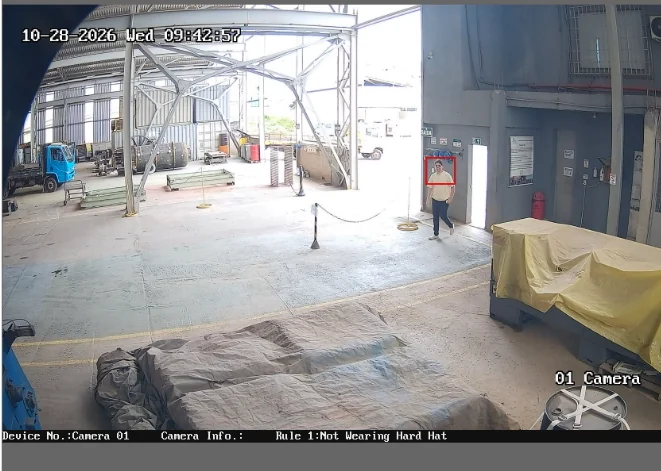

02 / WHAT HAS BEEN DONE?
From hypothesis
to field deployment.

Monitored industrial facility · 28 OCT 2026
01
Camera with onboard AI
Hikvision DeepinView, tested in a real industrial facility.
02
Observed capabilities
Hard hat events, mobile phone use and face capture/matching.
03 / RESULTS
Three signs that
the technology works.

01
Hard hat detection
Events recorded.

02
Mobile phone use
Detection confirmed when the phone is visible to the camera.

03 RECORDS GENERATED
Face capture and matching
04 / BEHAVIOR DETECTION
Mobile phone detected.
Confirmed in field testing.
EVENT · USING MOBILE PHONE
05 / FACE CAPTURE
Identifying people requires
more than locating faces.
RECORDS GENERATED BY THE CAMERA ●

Facial data anonymized in this presentation
60–92%
Range of scores shown in sample matches
12 / DIRECT CONTACT
We're here for your project.
Douglas Serrano
As DS Games' manager, I offer direct contact with our clients at every stage of the project.
Schedule an In-Person or Online Visit!
PHONE
+55 (27) 99202-6776
13 / FIND US